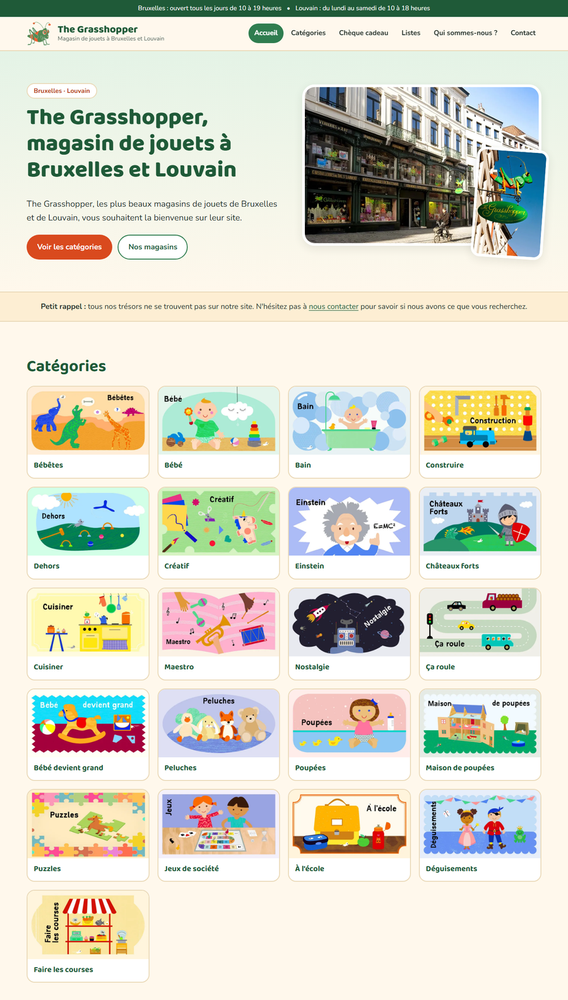
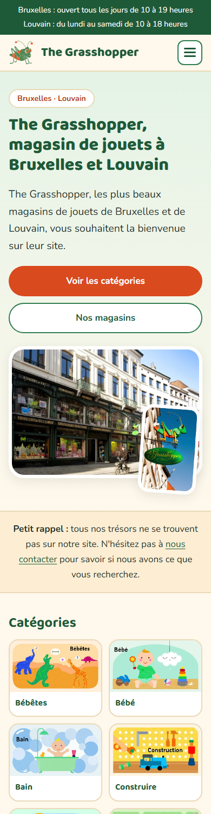

Refonte du site : liste des améliorations
Règle suivie : aucune information n'a été inventée. Tous les textes, adresses, horaires, téléphones, e-mails, numéros de TVA, prix et conditions viennent du site d'origine. Seules la mise en forme, la structure et la technique ont changé.


| Point | Site d'origine | Nouveau site |
|---|---|---|
| Titre de la page d'accueil | « The Grasshopper Toy shop | The Grasshopper | Brusselr » (faute de frappe, pas de mot-clé en français) | « The Grasshopper | Magasin de jouets à Bruxelles et Louvain » |
| Meta description | Une seule, sur l'accueil, en trois langues mélangées. Aucune sur les pages Qui sommes-nous, Contact, Chèque cadeau et Conditions générales. | Une description unique par page, en français, de moins de 170 caractères, construite avec les informations du site. |
| Titres H1 | Aucun H1 sur les pages analysées. Le nom du magasin est en H2 et le slogan en H6. | Un seul H1 par page, puis H2 et H3 dans l'ordre. |
| Données structurées | Un seul magasin déclaré (Bruxelles), sans horaires ni e-mail. Louvain absent. | Deux fiches ToyStore (Bruxelles et Louvain) avec adresse, téléphone, e-mail, horaires, TVA et moyens de paiement. Ajout de Organization, WebSite, FAQPage et BreadcrumbList. |
| Textes alternatifs des images | Vides ou inexploitables : « 17 », « 20 », « 5 », « cheque.webp », « plecuches », « cuisisner ». | Un texte descriptif sur chaque image (« Catégorie Peluches », etc.). |
| Sitemap | Contient des pages de test ou vides : /test, /blank-1, /oudehome, /bg, /achtergrond, /NewCollectionName. |
Sitemap propre avec les 6 pages utiles uniquement. |
| Page Listes | Marquée noindex : invisible pour Google. |
Page prête à être indexée, avec titre et description sur la liste de naissance. |
| Partage sur les réseaux | Pas d'image de partage déclarée sur l'accueil. | Open Graph et Twitter Card complets avec image 1200 × 630. |
| Questions fréquentes | Aucune. Les réponses sont enfouies dans les conditions générales. | 7 questions en page d'accueil, réponses reprises des conditions générales, de l'accueil et de la page Chèque cadeau. |
| Balise canonique, langue, robots.txt | Présents. | Conservés : canonique par page, lang="fr-BE", robots.txt avec lien vers le sitemap. |
| Point | Site d'origine | Nouveau site |
|---|---|---|
| Langues mélangées | Sur la version française : menu « Mijn adressen », boutons « Verstuur vraag naar Brussel », message « Uw vraag is succesvol verzonden! ». | Tout le site est en français. |
| Pages vides | « Information de sécurité » est vide. « Déco » affiche « Il n'y a aucun article à afficher pour le moment ». | Ces deux entrées sont retirées du menu tant qu'elles n'ont pas de contenu. |
| Orthographe | « Maison de poupeés », « Cheque Cadeau », « Chateaux forts », « Bebetes », « peuvent etre utiliser », « anniver-saire ». | Corrigé : « Maison de poupées », « Chèque cadeau », « Châteaux forts », « Bébêtes », « peuvent être utilisés », « anniversaire ». |
| Horaires | Visibles seulement en bas de l'accueil et sur la page Contact. | Bandeau d'horaires en haut de chaque page, et fiches magasins sur l'accueil et la page Contact. |
| Infos légales | Numéros de TVA uniquement sur la page Contact. | TVA, raison sociale et adresse du siège dans le pied de page de chaque page. |
| Conditions générales | Un long bloc de texte sans navigation. | Texte identique, avec un sommaire cliquable des 12 articles. |
| Chèques cadeaux | Deux phrases qui se répètent sur le montant libre. | Texte repris sans la répétition, les 10 montants affichés en grille, validité de 12 mois mise en avant. |
| Point | Site d'origine | Nouveau site |
|---|---|---|
| Menu | Plus de 30 entrées, dont les 22 catégories dans un sous-menu. | 6 entrées. Les catégories sont présentées en grille illustrée sur l'accueil. |
| Page d'accueil | Un texte de bienvenue puis les vignettes, sans photo des magasins. | Accroche, photo de façade, deux boutons d'action, catégories, présentation, magasins et questions fréquentes. |
| Identité visuelle | Fond décoratif, typographie par défaut. | Palette tirée du logo (vert et orange de la sauterelle), typographie ronde et lisible. Les illustrations de catégories d'origine sont conservées. |
| Mobile | Version mobile générée par Wix. | Mise en page pensée pour le mobile : menu dépliant, boutons pleine largeur, catégories sur 2 colonnes. |
| Actions rapides | Téléphone et adresse en texte simple. | Boutons « Appeler » et « Itinéraire » pour chaque magasin, adresses e-mail cliquables. |
| Accessibilité | Images sans texte alternatif, pas de H1. | Lien « Aller au contenu », navigation au clavier, contours de focus visibles, animations coupées si l'utilisateur le demande. |
| Point | Site d'origine | Nouveau site |
|---|---|---|
| Code HTML de l'accueil | 690 Ko | 24 Ko |
| Feuille de style et script | Scripts et styles de la plateforme Wix | Un fichier CSS de 13 Ko et un script de moins de 1 Ko |
| Images | JPG et PNG | Format WebP, dimensions déclarées, chargement différé pour les images hors écran |
| Hébergement | Wix | Site statique, hébergeable partout (ici GitHub Pages) |
buy@thegrasshopper.be sur la page Contact et dans l'article 1 des conditions, mais info@thegrasshopper.be en bas des conditions générales. Le nouveau site utilise buy@thegrasshopper.be.noindex pour ne pas concurrencer le site officiel avec un contenu dupliqué. Tout le SEO est en place : il suffit de passer DEMO = False dans build.py le jour de la mise en ligne sur le vrai nom de domaine.